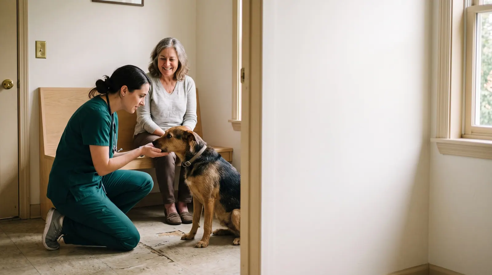
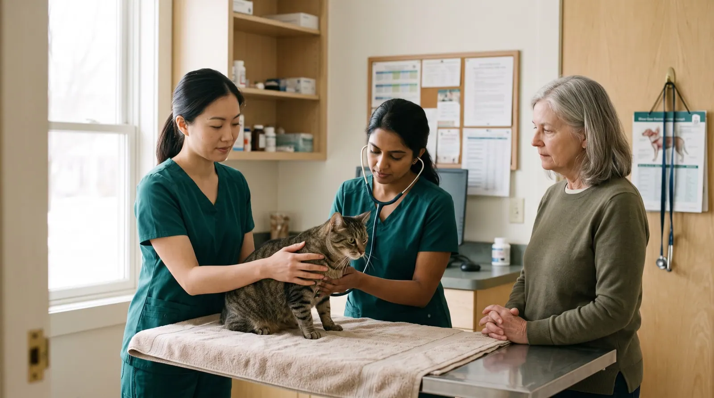
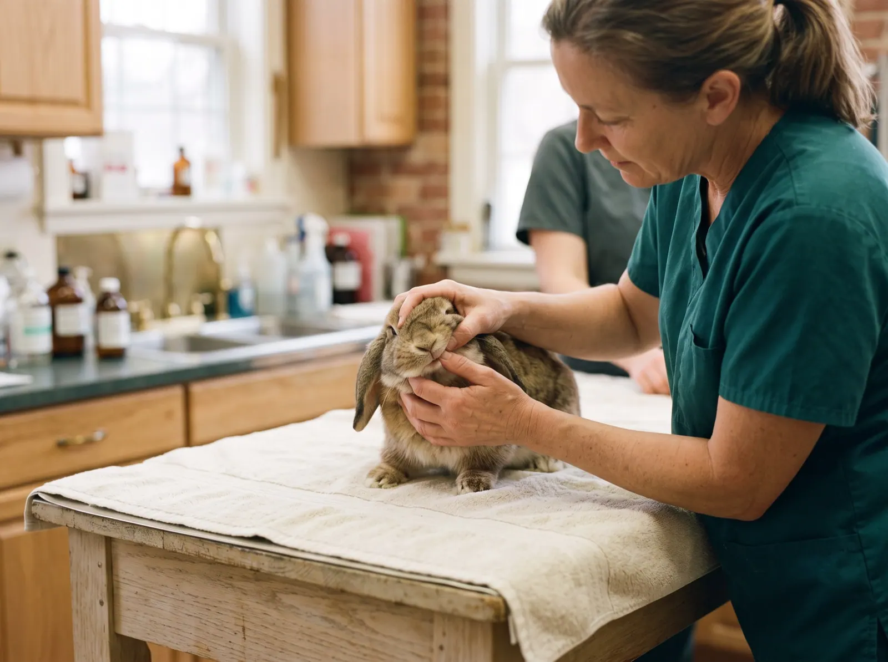
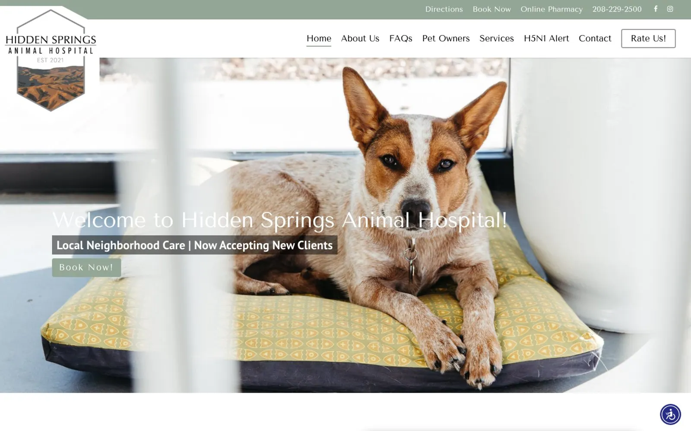

The waiting room is now online
We read the websites of 138 independent veterinary clinics in the US the way a pet owner does, on a phone, against ten questions: among them whether the clinic sees their kind of animal, what a visit costs and what to do when the clinic is closed.
0 clinics
Four kinds of practice
Fourteen checks
The State of Independent Vet Clinic Websites · Q4 2026 · edition 2026-Q4
The headline
0%answer it
of the clinic websites in this study answer the pet owner's question.
Owners ask ten things. The median clinic answers four.
Across 138 independent vet clinic websites, the median site answers four of the ten pet-owner questions this edition tests. 17% show any price; 57% say what to do after hours.1
What an owner can find out before calling
We turned ten questions people ask before they choose a vet into ten checks, then read each site for an answer a worried owner could find on a phone.
Share of all clinic websites answering each question · coral = fewer than a third · tick = half
| The owner asks | Answered | Clinics |
|---|
Figure 1. Share of clinic sites that answer each question on the home page or a page it links to, read from the served HTML. Sorted from least to most answered.


Four kinds of practice, side by side
General and family practice (51): median score 77, a price shown on 12%, after-hours instructions on 57%. Emergency and urgent care (30): median score 76, a price shown on 7%, after-hours instructions on 83%. Specialty and referral (25): median score 75, a price shown on 8%, after-hours instructions on 40%. Mobile and house-call vets (32): median score 78, a price shown on 44%, after-hours instructions on 44%.
Where each website scores
Overall website score out of 100, one dot per clinic; the brass rule is each group's median
Figure 2. Overall website score out of 100, one dot per clinic. The brass rule marks each group's median.

The owners nobody mentions
0%
of clinic websites say whether they see rabbits, birds or reptiles.
The check passes when a site names the animals it sees beyond cats and dogs, or says plainly that it sees only cats or dogs. Most sites in this group do neither, so an owner of a rabbit, a bird or a reptile has to call to find out.
Four clinics, up close
Four real clinic sites from this edition, one strong, two in the middle and one weak. Each photograph shows the kind of moment its findings describe; the clinic itself stays anonymous. The number is the overall website score; each dot is one check, filled when the site passes it.
Hidden Springs Animal Hospital
General and family practice, Boise, ID. It answers 8 of the 10 pet-owner questions this edition tests, loads fast on phones and describes its images; like most sites in this study, it has yet to pass text contrast (WCAG 1.4.3). Its overall website score is 85/100. Named as a positive example; every other site in this report is anonymous.

What it does well
- Tappable phone plus opening hours
- Species named, or exotics said yes or no
- What to do after hours or in an emergency
- Book or request an appointment online
- Says whether it takes new patients
- Veterinarians named with their degree
- Payment plans, financing or pet insurance explained
- Fear Free or low-stress handling described
- Every image has a text description (WCAG 1.1.1)
- Clikiti pillar scores of 90 or more: SEO 99
Where it could still improve
- Not found on the home page or the pages it links to: a price shown: an exam, a vaccine or a fee
- Not found on the home page or the pages it links to: reviews marked up, in a widget or quoted

The owners left out
An owner using a screen reader, a keyboard, or an old phone on a weak signal is still a client. These checks measure whether the site lets them in.3
Table 1. Technical checks, share of the 138 clinic websites that fail each one.
How the clinic sites were read
Read
The home page and up to nine pages it links to (services, new patients, emergencies, pricing and payment, team, Fear Free, reviews, booking, contact), read as a server delivers them. The pet-owner questions are answered here, by fixed published rules (Appendix A4).
Measure
Google Lighthouse (PageSpeed Insights) in a phone and a desktop render, with Chrome UX Report field data where it exists: load time, contrast and image descriptions. Repeatable.
Review
An expert usability review of each home page against Nielsen's heuristics, used only in the usability part of the score. Every issue must name the heuristic, a severity and the element, or it is dropped.
Read the full methodology Sample, definitions, scoring, precision and limitations, in Appendix A.
For agencies and freelancers
What this means for agencies
For small agencies and freelancers who sell websites to independent veterinary clinics. We scanned 138 of their websites: 0% score under 60 out of 100, and 99% leave at least three of the questions pet owners ask unanswered. Here is where the winnable work is, which problems to lead a pitch with, and how to show them without days of spec design.
Who is realistic to win
Emergency and urgent care are the most winnable: the lowest median score in this report (76 out of 100), and 0% of them score under 60. Their problems are visible, specific and fixable by a small team.
| Type | Sites | Median | Under 60 |
|---|---|---|---|
| General and family practice | 51 | 77 | 0% |
| Emergency and urgent care | 30 | 76 | 0% |
| Specialty and referral | 25 | 75 | 0% |
| Mobile and house-call vets | 32 | 78 | 0% |
Score out of 100. "Under 60" is the share of sites that miss most of what a pet owner looks for.
5 problems to lead a pitch with
- 83%Are you taking new patients? Quick fix
Say on the home page whether the clinic is taking new patients, with one line on what the first visit involves and what records to bring.
A family new to town cannot tell from your site whether you would even see their pet.
- 83%Will my anxious pet be handled gently? Content
A short page on how the clinic handles anxious pets: Fear Free or Cat Friendly certification, quiet rooms, pre-visit calming, linked from the home page.
Owners of nervous animals put off visits, and your site never tells them how you make it easier.
- 83%What does a visit cost? Content
Publish the price of an exam and the common vaccines, or a starting price and the travel fee for house calls.
"What will a visit cost?" is the question owners are most nervous to ask, and your site gives them no number at all.
- 78%Do you see my kind of animal? Quick fix
Name the animals the clinic sees (dogs, cats, rabbits, birds, reptiles) and say plainly whether it sees exotics, on the home and services pages.
Owners of a rabbit or a bearded dragon cannot tell whether you will see them, so they call someone who says so.
- 78%Text contrast passes 4.5:1 Quick fix
Raise text contrast to at least 4.5:1 in the theme.
Parts of the site are hard to read, and it is a WCAG failure.
Share of sites with the problem. WCAG items are accessibility failures. Every check cites a standard in the method section.
How to show a prospect their problems, and a redesign
- 1Lead with their problem, not your services
Open with one question the site fails, for example "Are you taking new patients?" (83% of sites in this report miss it), and show the exact page where the answer should be.
- 2Put a number on it
Compare their site with the sector: across 138 independent veterinary clinics sites, the median scores 77 out of 100 and answers 4 of the 10 questions pet owners ask. A number travels further inside the client than an opinion.
- 3Show the fix without days of spec work
A rough redesign that answers those questions persuades better than a proposal, but it usually costs a designer a day or two per prospect. You can sketch it by hand, or use Clikiti: the scan is free and shows any site's problems in about a minute, and paid plans draft a redesign of the home page from the prospect's own brand, from about $2.33 per pitch.
Scan a prospect's site free No sign-up. You see what the prospect would see.
Show every clinic what its owners see
Clikiti reads a clinic's site the way a pet owner does, states what it found, and generates the redesign you present before the first call.
See your market on ClikitiMethodology
How this study was designed, who was included, what was measured and how far the results can be relied on. It is written so that an agency can share it with a practice owner who wants to check the evidence behind a pitch.
A1. The research question
When a pet owner looks an independent vet clinic up online, usually on a phone and often worried, can they find out how to reach it and when it is open, whether it sees their kind of animal, what to do if something happens after hours, whether they can book without calling, whether it is taking new patients, who the veterinarians are, how they could pay for a large bill, whether an anxious animal will be handled gently, roughly what a visit costs, and whether other owners vouch for it?
Population. Independently owned US veterinary practices with one to three locations and their own website, in four groups: general and family practice, emergency and urgent care, specialty and referral, and mobile and house-call vets. These are the veterinary businesses a small or mid-size web agency can realistically win as clients.
A2. Who was studied
The sample was built from local search listings and state veterinary association directories, city by city, then screened so that every site in it is one an independent agency could realistically win.
| Source | What it contributes | Sites |
|---|---|---|
| Local search, general practice | Independent general, family, small-animal, feline-only and mixed-animal practices found in local search results and state veterinary association member directories, city by city | 127 |
| Local search, emergency and urgent care | Independent 24-hour emergency hospitals and veterinary urgent care clinics found in local search results, city by city | 39 |
| Local search, specialty and referral | Independent specialty and referral practices (surgery, internal medicine, oncology, cardiology, dermatology, ophthalmology, dentistry, rehabilitation, exotics) found in local search results and specialty college listings, city by city | 20 |
| Local search, mobile and house-call | Independent mobile clinics and house-call veterinarians found in local search results, city by city | 33 |
Included
- An independently owned veterinary practice with one to three locations and its own website (not a directory, marketplace or social profile)
- Based in the United States
- Home page responds and shows the practice it claims to be (each home page title was checked before scanning)
Excluded
- Practices owned by corporate groups (for example Banfield, VCA, NVA, BluePearl, Thrive, Mission Pet Health, PetVet Care Centers, Ethos, Southern Veterinary Partners, Pathway, Rarebreed, Veterinary Emergency Group, AmeriVet, Lakefield, United Veterinary Care), including practices whose site says they are part of a group's family of hospitals
- Clinics inside pet stores (Petco, PetSmart), and low-cost vaccine chains
- University teaching hospitals, shelters, humane societies and other non-profit clinics
- Directories, marketplaces and lead-generation pages
- Parked, placeholder, password-protected or unreachable sites, hijacked domains serving unrelated content, and duplicates
| From list to sample | Sites |
|---|---|
| Candidates listed | 147 |
| Removed at screening: the site refused automated visitors or showed a bot challenge (3) | −3 |
| Removed at screening: parked or placeholder page (2) | −2 |
| Removed at editorial review: none (spam-word, corporate-footer and shared-phone checks found no hijacked domain, group-owned clinic or duplicate) | 0 |
| Cohort | 142 |
| Region (US Census) | General and family practice | Emergency and urgent care | Specialty and referral | Mobile and house-call vets | All |
|---|---|---|---|---|---|
| Northeast | 12 | 8 | 6 | 7 | 33 |
| Midwest | 11 | 8 | 6 | 7 | 32 |
| South | 15 | 6 | 6 | 10 | 37 |
| West | 13 | 8 | 7 | 8 | 36 |
| All regions | 51 | 30 | 25 | 32 | 138 |
A3. How the sites were read
Pages. The home page, then for each of nine topics (services, new patients, emergencies and after hours, pricing and payment, team, Fear Free and low-stress care, reviews, booking, contact) the best-matching link on the home page.
Speed and accessibility. Google PageSpeed Insights (Lighthouse) on a mid-range phone profile and on desktop, plus Chrome UX Report data from real visitors over the previous 28 days where Google publishes it for the site.
Crawler conduct. One request at a time to each site, at least 400 ms apart, at most ten pages per site; robots.txt is read and obeyed for every page requested; a site that refuses is left out and never retried. The crawler identifies itself as Mozilla/5.0 (compatible; ClikitiResearch/1.0; +https://clikiti.com).
A4. What was measured
10 questions pet owners ask before they call or bring an animal in, answered from what each site publishes, and 4 technical checks against published standards. A check passes only when the rule below is met; anything the crawler cannot confirm counts as not answered.
| Question | Counts as answered when | Standard |
|---|---|---|
| How do I reach you, and when are you open?Tappable phone plus opening hours | The home page has a tappable phone link (not a template placeholder number), and the home, contact or emergency page states opening hours (a day and a time range), or says it is open 24 hours. | Pet-owner question 1 |
| Do you see my kind of animal?Species named, or exotics said yes or no | The home, services, new-patient or contact page says which animals beyond cats and dogs the practice sees (a category such as exotics, avian, equine or pocket pets; a species named as a patient or service; or two or more species), or says plainly that it sees only cats, only dogs, or dogs and cats only. Animals in staff biographies and conditions such as snake bites do not count. | Pet-owner question 2 |
| What do I do if it happens tonight?What to do after hours or in an emergency | The site tells an owner what to do outside opening hours or in an emergency: it is open 24 hours, it names an emergency hospital or number to call or go to, or it takes walk-ins. Menu labels alone do not count. | Pet-owner question 3 |
| Can I book without calling?Book or request an appointment online | A link, button or embedded scheduler lets the owner book or request an appointment online. A scheduling service counts only on its own host; pay, forms, portals, records sign-in and reviews on the same services do not count. | Pet-owner question 4 |
| Are you taking new patients?Says whether it takes new patients | The site says whether it is accepting new patients or new clients (either answer counts). | Pet-owner question 5 |
| Who will treat my pet?Veterinarians named with their degree | At least one veterinarian is named together with a veterinary degree (DVM or VMD), a board certification (Diplomate, DACVIM and the like) or the veterinary school they attended. | Pet-owner question 6 |
| How can I pay for a big bill?Payment plans, financing or pet insurance explained | The site names a financing or payment programme (CareCredit, Scratchpay, Cherry and the like), says it offers a payment plan, explains a wellness plan with a monthly fee, or explains how pet insurance is accepted or claimed. A bare menu label does not count. | Pet-owner question 7 |
| Will my anxious pet be handled gently?Fear Free or low-stress handling described | The site describes gentle handling for anxious animals: Fear Free certification, Cat Friendly Practice status, low-stress handling, or pre-visit medication for fearful pets. | Pet-owner question 8 |
| What does a visit cost?A price shown: an exam, a vaccine or a fee | A dollar price is shown for an exam, a vaccine, a procedure, a house-call or emergency fee, or a wellness plan (discounts, financing limits and deposits do not count). | Pet-owner question 9 |
| Do other owners vouch for you?Reviews marked up, in a widget or quoted | Owner reviews are marked up for search engines (Review or AggregateRating structured data), shown through a review widget, or at least two owner testimonials are quoted on the home or reviews page. | Pet-owner question 10 |
| Technical checks | ||
| Loads in under 2.5 s on a phoneLoads in under 2.5 s on a phone | Real visitors on phones see the main content within 2.5 seconds (Chrome UX Report, 75th percentile). Where Google publishes no visitor data, the phone lab test is used. | Core Web Vitals · LCP |
| Text contrast passes 4.5:1Text contrast passes 4.5:1 | No text on the home page fails the WCAG 1.4.3 minimum contrast of 4.5:1, in either the phone or desktop test. | WCAG 1.4.3 |
| Images have text descriptionsImages have text descriptions | Every meaningful image on the home page has a text description (WCAG 1.1.1). | WCAG 1.1.1 |
| VeterinaryCare structured dataVeterinaryCare structured data | The site describes the practice to search engines with VeterinaryCare (or AnimalHospital) structured data. | Schema.org · VeterinaryCare |
A5. The website score
Each site's overall score (0 to 100) is Clikiti's website score, rubric 2.0.0. It measures the website, not the clinic, and the pet-owner questions above do not feed it. It is a weighted mean of five pillars:
| Pillar | Weight | Based on |
|---|---|---|
| Usability | 30% | Checks of the home page for broken links and images, and an expert review of the page as rendered on a phone and on a desktop screen, against Jakob Nielsen's ten usability heuristics. Each issue must name the heuristic, a severity on the Nielsen Norman Group scale and the exact element or wording; issues without all three are discarded, and two independent passes must agree. |
| Speed | 25% | Google Lighthouse on a mid-range phone (60%) and on desktop (20%), and real-visitor Core Web Vitals from the Chrome UX Report (20%) where available. |
| Accessibility | 25% | Google Lighthouse accessibility audits (70%) and Clikiti's own WCAG checks of the served page (30%). |
| Search | 10% | Google Lighthouse SEO audits (60%) and Clikiti's own search checks of the served page (40%). |
| Trust | 10% | Google Lighthouse best-practice audits (40%) and security header checks (60%). |
Within a pillar, each issue costs points by severity (critical, high, medium, low) and by how many times it occurs; issues based on judgement count at 70% of measured ones, and duplicates of the same root cause count once. On the four clinic profiles, the number out of 100 is this overall score, and each dot is one check in its group: filled when the site passes it, hollow when it does not.
A6. Precision
With 138 sites, a share reported for the whole sample is precise to within ±8.3 percentage points at 95% confidence (worst case, a 50% share; 1.96 × √(0.25/n)). By type: general and family practice ±13.7 (n = 51); emergency and urgent care ±17.9 (n = 30); specialty and referral ±19.6 (n = 25); mobile and house-call vets ±17.3 (n = 32). Differences between types smaller than these margins should be read as similar. Percentages are rounded to whole numbers; medians are the middle value of the sites in a group.
A7. Quality control
- Every home page in the cohort was fetched and its title checked against the listed practice before scanning, and every home page was checked for text from gambling, pharmacy, adult or crypto spam
- Every site was checked for a corporate-group footer or 'part of the family' statement, and for duplicates of another practice on a different domain
- Detection rules were checked against the evidence they record for a sample of clinics in every group, and revised before the final run
- Every published figure is recomputed from the data at build time, and a statement in the text that the data does not support stops the build
- Results are published only after automated checks for missing data, anonymity, accessibility of the report itself and the margin of error statement pass
A8. Limitations
- A point-in-time snapshot: sites change, and a site may have improved or declined since it was read.
- Only public pages were read: the home page and pages it links to. Client portals, chat widgets, pharmacies and multi-step booking flows were not tested.
- Answers are read from the page as a server delivers it. Content that only appears after scripts run in the browser (some schedulers and review widgets) is not seen, which the study counts as a gap a search engine or a slow phone would also meet.
- 5 candidates blocked automated visitors or served a parked page and are not in the study; sites behind such protection may differ from those studied.
- Ownership was judged from what each site and public listings say. A practice sold to a group without saying so on its site may remain in the study.
- The study reports what a website shows. It does not judge any clinical care, outcome or price, or compliance with any state veterinary board rule.
- Automated accessibility tests find only part of what WCAG covers; keyboard and screen-reader use need a manual audit.
- The sample is a structured list of real, independent practices, not a random draw. Margins of error are given as a guide to precision, not as a guarantee that the results hold for every clinic in the country.
A9. Data, licence and corrections
The aggregate results are published as CSV and JSON beside this report under the Creative Commons Attribution 4.0 licence: you may reuse, adapt and share them, including in client proposals, with a credit to Clikiti and a link. No per-site results are published. Corrections and removal requests are reviewed and answered personally; see the end of this report.
Clinics in this study
The 138 websites in this edition, by type. This list says who was scanned and nothing more: results in this report are shown only in aggregate or anonymously.
General and family practice (51)
- All Feline HospitalLincoln, NE
- Anchorage Veterinary Clinic and Urgent CareAnchorage, AK
- Animal Hospital of RochesterRochester, NY
- Azalea Lakes Veterinary ClinicBaton Rouge, LA
- Back Cove Animal HospitalPortland, ME
- Bolton Veterinary HospitalBolton, CT
- Camp Hill Animal HospitalCamp Hill, PA
- Case Veterinary HospitalSavannah, GA
- Cats Limited Veterinary HospitalWest Hartford, CT
- Cats Only Veterinary ClinicUpper Arlington, OH
- Clifton Park Veterinary ClinicBallston Lake, NY
- Compassionate Care Veterinary ClinicCumberland, RI
- Desert East Animal HospitalEl Paso, TX
- Dupont Veterinary ClinicFort Wayne, IN
- Eastown Veterinary ClinicGrand Rapids, MI
- Eugene Animal HospitalEugene, OR
- Exeter Veterinary HospitalStratham, NH
- Feline Medical CenterRichmond, VA
- Hidden Springs Animal HospitalBoise, ID
- Hooksett Veterinary ClinicHooksett, NH
- Hopewell Veterinary HospitalJenkintown, PA
- Ina Road Animal HospitalTucson, AZ
- Indianola Veterinary ClinicIndianola, IA
- James Island Veterinary HospitalCharleston, SC
- Lake Seminole Animal HospitalSeminole, FL
- Limestone Veterinary HospitalHockessin, DE
- Mandarin Animal HospitalJacksonville, FL
- Manlius Veterinary HospitalManlius, NY
- Nichols Hills Pet ClinicOklahoma City, OK
- Oxmoor Animal ClinicBirmingham, AL
- Pawspital Animal HospitalMeridian, ID
- Pellissippi Veterinary HospitalKnoxville, TN
- PetinaryMadison, WI
- Pikesville Animal HospitalPikesville, MD
- Plateau Veterinary HospitalBend, OR
- Rockbrook Animal ClinicOmaha, NE
- Rocky Mountain Animal HospitalCasper, WY
- Santa Fe Animal HospitalSanta Fe, NM
- Sewickley Veterinary HospitalSewickley, PA
- Skaer Veterinary ClinicWichita, KS
- SoMa Animal ClinicLittle Rock, AR
- Sonoran Sky Pet HospitalMesa, AZ
- South Des Moines Veterinary CenterDes Moines, IA
- Southpaw VetSan Diego, CA
- The Cat's Meow Feline Veterinary ClinicSpokane, WA
- Two Rivers Veterinary HospitalWest Fargo, ND
- Urban Vet CareDenver, CO
- Vegas Valley Pet HospitalLas Vegas, NV
- Village Animal HospitalLexington, KY
- Waterloo Vets Animal HospitalAustin, TX
- Whitney Veterinary HospitalPeoria, IL
Emergency and urgent care (30)
- AcuteVet Animal Urgent CareOverland Park, KS
- Animal Center for Emergency and Specialty (ACES)Madison, WI
- Animal Emergency & Referral Center of MinnesotaOakdale, MN
- Animal Emergency & Specialty CenterReno, NV
- Animal Emergency CenterTulsa, OK
- Animal Emergency CenterCollinsville, IL
- Ark Veterinary Hospital & Urgent CareHenrietta, NY
- ASAP VetAustin, TX
- Central Hospital for Veterinary MedicineNorth Haven, CT
- Clarity Animal HospitalBillings, MT
- COVE Emergency & Specialty Pet CareDelaware, OH
- Frontier Veterinary Urgent CareGreenfield, WI
- Huntsville Veterinary Specialists & EmergencyHuntsville, AL
- Inkwell VeterinaryFort Collins, CO
- Jefferson Animal Hospital & Regional Emergency CenterLouisville, KY
- Orchard Park Veterinary Medical CenterOrchard Park, NY
- Out West Veterinary Urgent CareLittle Rock, AR
- PAWS Veterinary CareColumbus, OH
- Pet Emergency Clinic & Referral CenterSpokane, WA
- Portland Veterinary Emergency and Specialty CarePortland, ME
- Roadrunner Veterinary Emergency & Specialty HospitalAlbuquerque, NM
- Sentinel Veterinary Specialists & EmergencyMissoula, MT
- Silver Birch Veterinary Urgent CareNorfolk, NY
- Steel City Emergency VetsHoover, AL
- Tri-County Animal Emergency ClinicPeoria, IL
- Urgent Pet Care AZSurprise, AZ
- Veterinary Emergency Center of CantonCanton, CT
- Veterinary Emergency Center of ManchesterManchester, NH
- Veterinary Medical Center of CNYEast Syracuse, NY
- WAG Veterinary Emergency & Specialty Hospital (Wasatch Animal Group)South Salt Lake, UT
Specialty and referral (25)
- ACE of PawsAlbuquerque, NM
- Animal Eye AssociatesSt. Louis, MO
- Animal Eye Consultants of IowaHiawatha, IA
- Animal Eyes of NJParamus, NJ
- Apex Veterinary SpecialistsGreenwood Village, CO
- Avian and Exotic Animal CareRaleigh, NC
- Charlotte Animal Referral & Emergency (CARE)Charlotte, NC
- Coastal Veterinary Dermatology & Ear ClinicHouston, TX
- Dermatology Center for AnimalsSeattle, WA
- Dermatology Pet CareSacramento, CA
- Eyeshine Veterinary & Ophthalmology ServicesPhoenix, AZ
- Hudson Valley Veterinary DermatologyNew York, NY
- Madison Veterinary SpecialistsMonona, WI
- Northwest Animal Allergy & DermatologyBeaverton, OR
- Oakland Veterinary Referral ServicesBloomfield Hills, MI
- Oklahoma Veterinary SpecialistsTulsa, OK
- Pawsitive Steps Rehabilitation & Therapy for PetsRochester Hills, MI
- Pinnacle Veterinary SpecialistsGlen Mills, PA
- Precision Veterinary SurgeryWarren, NJ
- Princeton Veterinary SurgeryPrinceton, NJ
- Savannah Veterinary Internal MedicinePooler, GA
- Tree of Life Exotic Pet Medical CenterPhoenix, AZ
- Valley Central Veterinary Referral CenterWhitehall, PA
- Veterinary Ophthalmology Specialty PracticeSt. Louis Park, MN
- Violet Crown Veterinary SpecialistsBee Cave, TX
Mobile and house-call vets (32)
- 518 House Call VetAlbany, NY
- Bend Mobile VetBend, OR
- Buckeye Veterinary ServicesSan Diego, CA
- Caravan VetMinneapolis, MN
- Cats Only Veterinary Housecall ServicesTampa, FL
- Comforts of Home Vet CareBirmingham, AL
- Desert Paws Mobile Veterinary CareTucson, AZ
- Doorbell VetRochester, NY
- Dr Skilling Mobile VetRichford, VT
- Faithful Hearts Mobile Veterinary ServicesGreenville, SC
- Flex PetReno, NV
- Hawai'i Veterinary ServicesHonolulu, HI
- Healthy Paws of Baton RougeBaton Rouge, LA
- Heart of Vermont Veterinary HousecallsBerlin, VT
- House Call Vet RVARichmond, VA
- House Paws Home Veterinary CareSt. Paul, MN
- Ithaca Vet House CallIthaca, NY
- Journeys Home Pet EuthanasiaMadison, WI
- Lancaster Veterinary ServicesDenver, CO
- Metro-East Home Vet CareBelleville, IL
- Mike's Mobile Veterinary ServiceCincinnati, OH
- Missy's Own Mobile Veterinary ServiceCharlotte, NC
- Mobile Vet Care IndianaWestfield, IN
- Paws On The Move Mobile Veterinary ServicesAnchorage, AK
- Peace for PawsLas Vegas, NV
- Phoenix Veterinary ServiceNashville, TN
- Unleashed Veterinary House CallsOklahoma City, OK
- Vet At Your DoorBrunswick, ME
- Vet with Hart Veterinary House Call PracticeSt. Petersburg, FL
- Village Vet House Call Veterinary ServicesOmaha, NE
- Wellness Mobile Veterinary CareRotterdam, NY
- Whole Pet Mobile VetAustin, TX
About this study
This report is based on automated scans of publicly available home pages, and pages they link to, run on 2026-10-15. Its findings are a point-in-time technical snapshot of each website. They are not a judgement of any clinic's veterinary care, outcomes or prices, and automated checks may contain errors. This report is not veterinary advice, not a judgement of the quality of any clinical care or price, and it does not assess compliance with any state veterinary board rule. Clikiti is not affiliated with, and does not endorse, any clinic listed here; trademarks belong to their owners. The report is provided “as is” under CC BY 4.0, without warranty of any kind. Every person in this report's photographs is AI-generated; none is a real person. The one clinic screenshot is the featured clinic's own home page, shown unaltered.
Remove my clinic from this study
We review every request and reply when it's done; removed clinics are excluded from future editions.